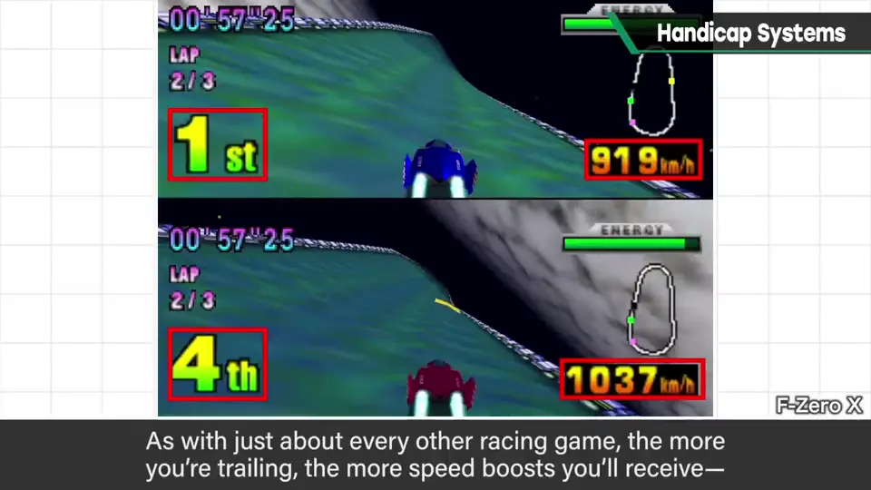
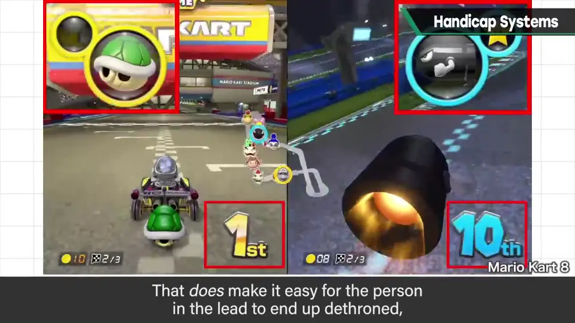
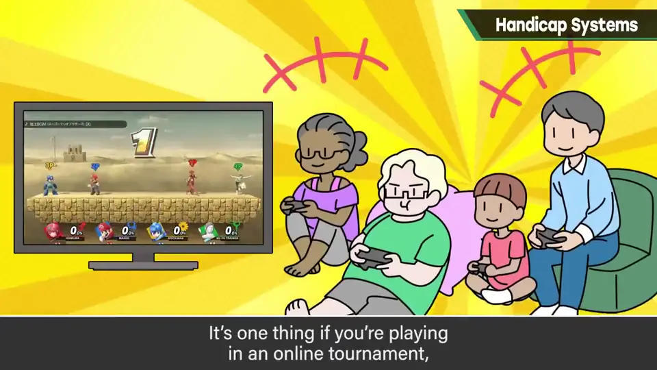
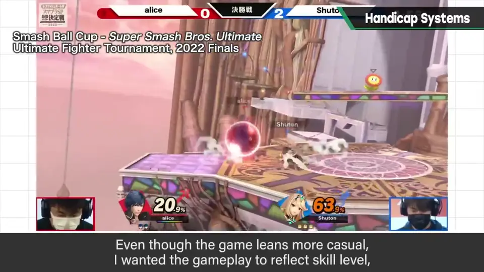
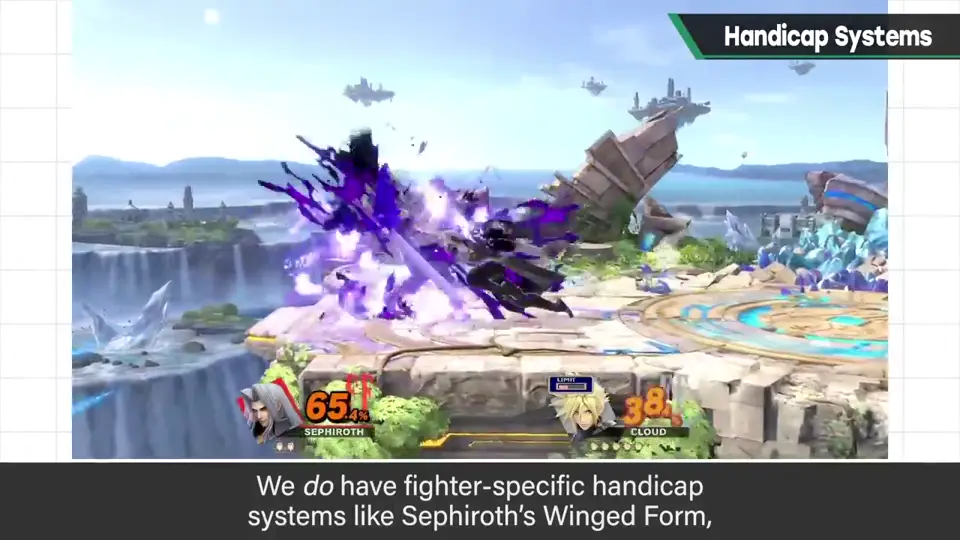
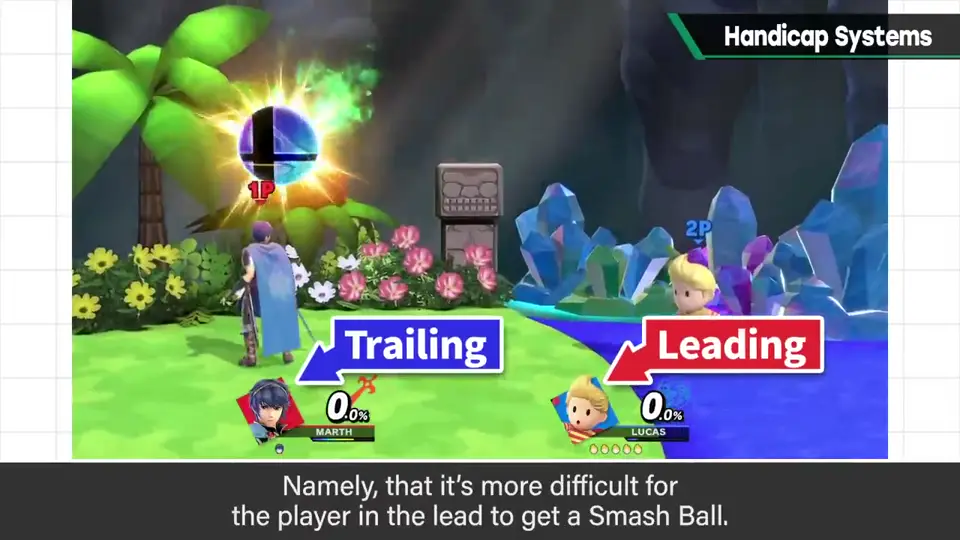
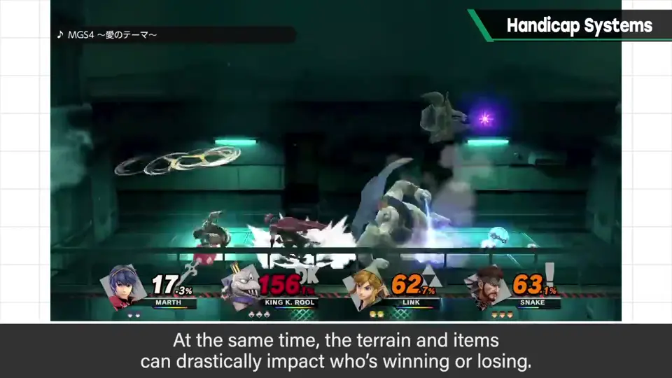
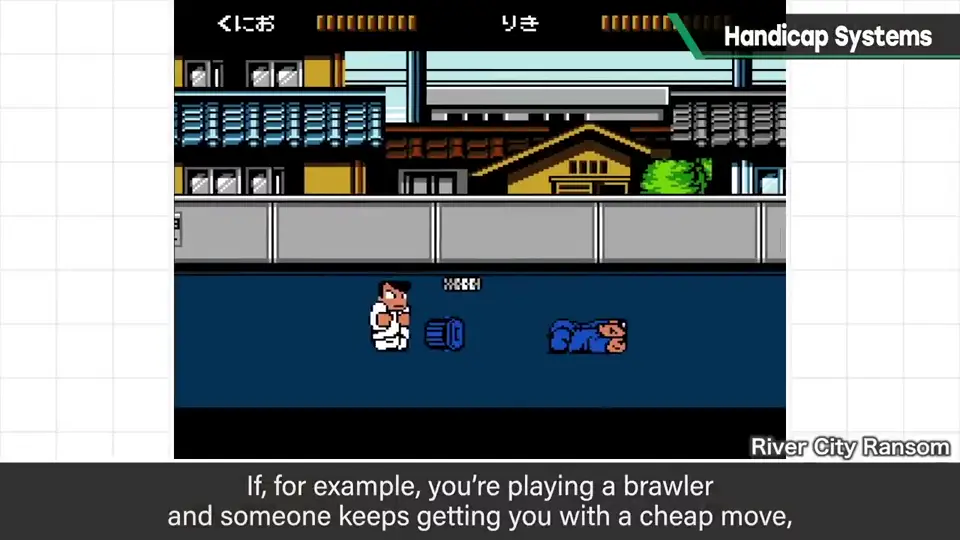
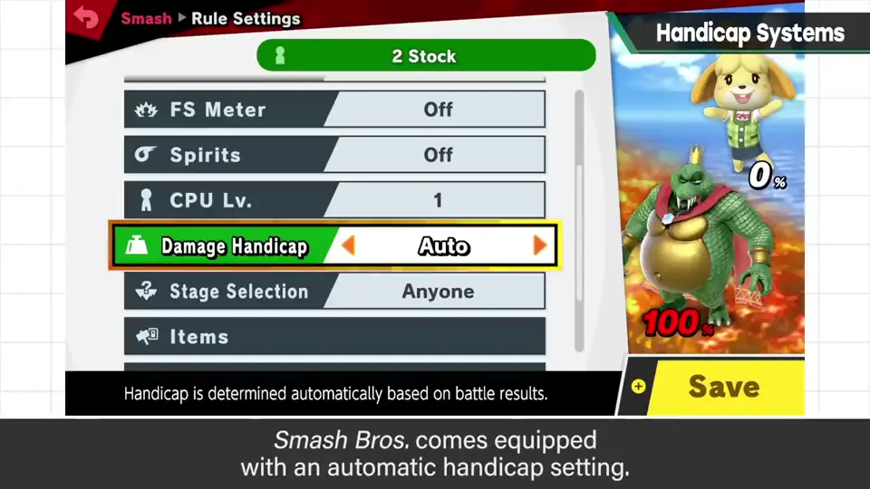
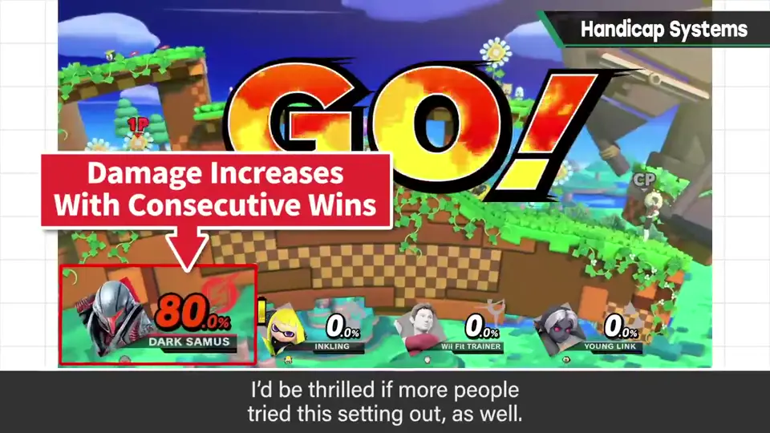

速览
玩对战游戏时，势均力敌的展开最有趣，不用多说；实力相差太大就不成游戏。但实际上实力差距会残酷地拉开，所以对战游戏有时会加入类似让分的东西。极端的是《马力欧赛车》：普通赛车游戏几乎都有「名次越落后速度越快」的加速（如 F-Zero X），它在道具上也大幅优待落后者，容易出现把第一名拉下来的展开，谈不上公平。有人讨厌这类要素，但休闲游戏就该加：实力第一的人一直拿第一的游戏不好玩。线上大赛也就罢了，普通家庭里有输有赢才对，这也是维持休闲游戏的条件之一。可《大乱斗》基本上不做这种迁就：它虽偏休闲，但樱井想让实力确实反映出来，所以原则上没有「输了攻击力变强、更不容易被打飞」的规格。像萨菲罗斯的单翼那样带让分性质的，是角色的固有特性。共通系统只有一个：领先者较难拿到 Smash 球；终极必杀槽也应该是落后一方更容易积攒。同时地形和道具等也会让胜负结果产生波动——终极必杀、道具、场地、外加终极必杀槽，什么都有的规则更适合派对游戏。樱井主要把《大乱斗》这样的对战游戏定位在各家各户的家庭对战环境，所以与线上有不太合的地方，这一点从《大乱斗X》的企划书就写了：和朋友家人玩时，有点凹凸的地方说一句就能改，比如有「卡死连招」也能说「别耍赖」并禁止，这甚至会成为乐趣和回忆。他和小孩、新手对战时会让对方捡 Smash 球、故意挨打——这种人力进行的才是最有效的让分。最后提醒：《大乱斗》有「自动让分」规格（连胜后初始伤害增加），希望大家试试。
1. 实力差是残酷的 0:04
玩对战游戏，势均力敌的展开最有趣，这不用多说；实力相差太远就不成游戏了。但实际上，实力差距会残酷地拉开。
所以对战游戏有时会加入类似让分的东西。
2. 《马力欧赛车》式的追赶 0:23
极端的例子是《马力欧赛车》。普通赛车游戏几乎都有「名次越落后速度越快」的加速，它在道具方面也大幅优待落后者。



结果往往出现把第一名拉下来的展开，谈不上公平。
线上大赛也就罢了，在普通家庭里有输有赢才对，这也是维持休闲游戏的条件之一。
3. 《大乱斗》不做迁就 1:13
而《大乱斗》基本上不做这种迁就。它虽然偏休闲，但樱井希望实力能确实反映出来，所以原则上没有「输了攻击力变强、更不容易被打飞」之类的规格。


像萨菲罗斯的「单翼」那样带有让分性质的，属于角色的固有特性。
共通系统只有一个：领先的人较难拿到 Smash 球。终极必杀槽也应该是落后方更容易积攒。


同时，地形、道具等也会让胜负产生波动。终极必杀、道具、场地，外加终极必杀槽——什么都有的规则更适合派对游戏。
4. 家庭对战与人力让分 2:09
樱井主要把《大乱斗》这类对战游戏定位在各家各户的家庭对战环境，所以和线上有不太契合的地方——这从《大乱斗X》的企划书就写了。
和朋友、家人一起玩时，有点凹凸的地方说一句就能修正。比如有「卡死连招」，只要说「别耍赖」并禁止就行；而这本身甚至会成为乐趣和回忆。

5. 别忘了「自动让分」 3:16
最后他提醒：大家可能忘了，《大乱斗》有「自动让分」规格，希望大家试试。


自测题
1. 为什么樱井认为休闲游戏应该加入追赶机制？
实力第一的人一直第一并不好玩；家庭里有输有赢，是维持休闲游戏的条件之一。 0:50
2. 《大乱斗》的共通系统中唯一的让分要素是什么？
领先者更难拿到 Smash 球（终极必杀槽也是落后方更易积攒）。 1:44
3. 樱井认为最有效的让分是什么？
人力让分：如和孩子、新手玩时让对方捡 Smash 球、故意挨打。 3:02